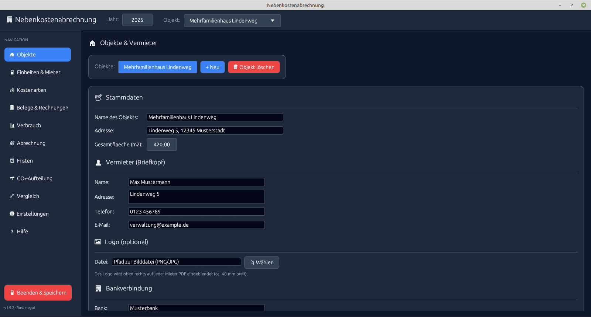

Nebenkostenabrechnung aktuell
- CO₂-Aufteilung nach CO2KostAufG inkl. 19 % MwSt.
- Umlageschlüssel: Fläche, Personen, Verbrauch, Tage, 2-Schlüssel-Mix
- Zählerwechsel im laufenden Jahr, Verbrauch wird summiert
- Mieterwechsel, Leerstand, Rundungsausgleich, Vorauszahlungs-Vorschläge
- PDF-Anschreiben, CSV-Export, Jahres-ZIP-Archiv, Vermieter-Journal
Windows · portable EXE · 11,3 MB
Herunterladen
Linux · AppImage · 8,6 MB
Herunterladen
Zum Repository & Anleitung